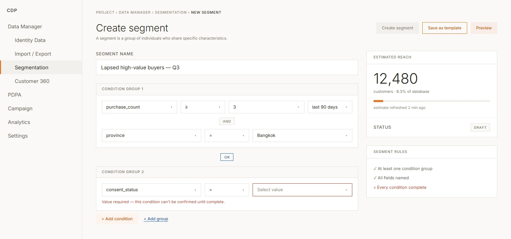

I joined a customer data platform mid-build. The screens and product logic already existed, but the shared rules behind them did not. Over four months I audited the product, built a common design foundation, and used it to specify data, consent, campaign, and setup workflows through handoff.
The product was well into its build with no shared system: every screen answered the same design questions its own way, and the rules holding it together lived in people's memory, not on screen.
Define the shared visual and behavioral rules first, then apply them to the highest-risk workflows and specify their normal, empty, error, and gated states before handoff.
In development — design system and screen specifications handed to the dev team. No launch or usage data yet; this case shows the design work, not measured product impact.
I audited the existing interface, defined the shared visual and behavioral rules, then applied them to selected product areas and documented the states needed for development and QA.
One resulting screen: the segment workspace, assembled from the shared actions, tags, search patterns, and validation rules described below.

A CDP spanning segments, imports, journeys, RFM scoring, and PDPA consent — built on legacy schemas with no full-rebuild path. The individual features existed; the shared rules between them were harder to see:
Nothing on screen said Identity Data came before Import — data could enter before the rules that match it to a customer existed.
Upload, mapping, validation, error, and confirmation states were not separated clearly enough to show what had happened or what to do next.
Similar campaign logic was represented differently across features, making each new flow another one-off design problem.
Names and states were not documented consistently, so the same behavior had to be clarified repeatedly across design, development, and QA.
No single screen had to fail for the product to feel fragmented. The cost lived between screens: the same design question answered several slightly different ways, with no visible rule saying which answer was intended. The work below turns those hidden rules into reusable product decisions.
Decision 01 · Create shared languageWithout a shared vocabulary, screens used different colors, sizes, and action patterns for similar behavior. I started with the smallest reusable decisions — color, type, and actions — so design, Product, Dev, and QA could refer to the same parts as feature work continued.
Neutral structure, orange primary, blue secondary.
One hierarchy reused across product areas.
Primary, secondary, subtle, inline, and disabled states.
The highest-risk dependency was allowing Import before Identity Data was configured. I used one progress pattern across onboarding and the setup gate: Import and Export remain unavailable until identity rules exist, and empty states point users back to the required setup.
Journey automation and RFM (recency–frequency–monetary) scoring contain their own logic, states, and validation. I treated them as reusable product patterns rather than one-off screens: journey nodes shared one completeness rule, while RFM reused the same scoring, group, and status language across views.
| Group | Recency | Frequency | Monetary |
|---|---|---|---|
| Champions | High | High | High |
| Loyal Customers | Mid | High | High |
| Potential Loyalist | High | Mid | Mid |
| Need Attention | Mid | Mid | Mid |
| At Risk | Low | Mid | High |
| Cannot Lose Them | Low | High | High |
| Lost | Low | Low | Low |
Recency — how recently they last bought · Frequency — how often they buy · Monetary — how much they spend
The segment workspace at the top is one example. The same foundation also shaped search, structure control, import/export, journeys, consent, and onboarding. Across data workflows, the rule stayed consistent: show the state of the data, not only the data — including upload, mapping, validation, error, and confirmation states.
| Component set | Product screens it's built into |
|---|---|
| Search-advanced | Segmentation · Customer Single View event search · analytics templates |
| Structure-control forms | Customer, Event, Catalog, and Voucher schema builders |
| Import / export rows | Upload → mapping → validation → error → confirmation |
| Journey nodes | Journey Builder canvas and configuration states |
| Consent set | PDPA (Thailand's data-privacy law) tracking-event config · Consent Banner builder |
| Progress tracker | Project onboarding · the Identity Data setup gate |
The system validates configuration, not campaign outcome. A segment could still resolve to zero people without an explicit warning. I would add a reach check before launch so the user sees the consequence before sending.
The setup sequence and allowed nesting depth were design judgments made without usage data because the product had not launched. After release, I would instrument setup completion, error recovery, and nesting behavior to see which rule needs revision first.
Working on something like this? natthapath.d@gmail.com·LinkedIn